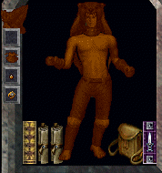
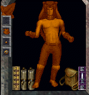
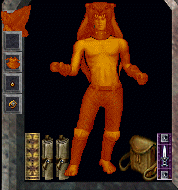

Clean UP Britanniaのセット装備効果
バーサク
- ダメージによりHPが最大値の50％未満となったときに発動する
- 最後にダメージを受けてから15秒経過するかHPが最大値の50％以上となったとき解除される
- バーサクが発動してからHPが10％減少するごとに怒りの段階が上がる（最大で5段階）
- 受けたダメージの表記から一定の割合でダメージが差し引かれ、実際のダメージとなる。
バーサクの強度、怒りの段階が高いほど差し引かれる割合が高くなる。
- 魔法、包帯および攻撃によるHP回復量は、通常の回復量から一定の割合で差し引かれたものとなる。
バーサクの強度、怒りの段階が高いほど差し引かれる割合が高くなる。
これは、他者からの回復にも適用される。
バーサクによるダメージと回復減少率の目安
怒りの段階
＼
バーサク強度 |
1
残HP50%↓ |
2
残HP40%↓ |
3
残HP30%↓ |
4
残HP20%↓ |
5
残HP10%↓ |
| 1 |
ダメージ |
-15% |
-22% |
-30% |
-35% |
-40% |
| 回復量 |
-40% |
-55% |
-65% |
-70% |
-75% |
| 5 |
ダメージ |
-40% |
-55% |
-65% |
-75% |
-80% |
| 回復量 |
-75% |
-80% |
-85% |
-90% |
-95% |
怒りの段階と体色。左から1段階、3段階、5段階でフィールド上のキャラクターにも反映される。
フルセットでないときは、パーツの色だけが変化する。



釣りエサ効果
- 釣り竿にエサをつけたとき、その効果が発揮されやすくなります
TC1での釣りの結果。ギョギョのエサを使用、スキル110
釣りエサ効果なし ： 500回中7匹
釣りエサ効果+50％ ： 500回中19匹
Yamatoでの釣りの結果。イエローバラクーダのエサを使用、スキル110
エサなし ： 1000回中6匹
釣りエサ効果なし ： 1000回中32匹
釣りエサ効果+50％ ： 1000回中34匹
エサ自体の効果は明らかにあるようですが、セット装備の効果はよくわかりません。
魚群の影響でわかりにくくなっている可能性もある？
バードマスタリーボーナス
TC1では、バードマスタリーボーナスが付加されていないようでした。
修正待ち
誠実の徳とForensics
誠実の徳は、フィールド上に落ちている「遺失物」を、遺失物預かりボックスまたは遺失物の所持者（NPC）へ
返却することで得ることができます。
返却と得られる誠実の徳の量
- 8徳の町の銀行に置かれている「遺失物預かりボックス」へ返却 ： 標準
- 遺失物の所持者が住んでいる町の「遺失物預かりボックス」へ返却 ： 標準×2
- 遺失物の所持者へ直接返却 ： 標準×4
遺失物をForensicsスキルで鑑定すると、スキル値に応じて遺失物の情報を得ることができます。
Forensicsスキルと得られる情報
- 41程度〜 ： 遺失物の所有者が住んでいる町を特定することができるようになる（情報レベル1）
- 55程度〜 ： 遺失物の所有者を特定することができるようになる（情報レベル2）
- Forensicsスキルで遺失物の鑑定に成功したとき、スキルが上がることがあります
得られる徳ポイントの量(調査)
遺失物を持ち主に直接渡したときあとの徳ポイントの状態を確認してみました。
得られる徳の標準値は、遺失物のプロパティ強度率の合計に依存しているようです。
- 初期 ： 0段階 ●×4
- plate gloves ： 保険金32gp、総強度率30 → 0段階 ●×4
- gargish cloth leggings ： 保険金46gp、総強度率46 → 0段階 ●×4
- hatchet ： 保険金53gp、総強度率52 → 0段階 ●×4
- leather tunic ： 保険金53gp、総強度率53 → 0段階 ●×4
- gargish ring ： 保険金66gp、総強度率65 → 0段階 ●×4
- crossbow ： 保険金89gp、総強度率83 → 0段階 ●×5
- skinning knife ： 保険金105gp、総強度率104 → 0段階 ●×5
- bone harvester： 保険金123gp、総強度率116 → 0段階 ●×5
- glass sword ： 保険132gp、総強度率130 → 0段階 ●×5
- leather shorts ： 保険金177gp、総強度率172 → 0段階 ●×6
- short spear ： 保険金233gp、総強度率182 → 0段階 ●×6
- gargish pike ： 保険金260gp、総強度率211 → 0段階 ●×7
誠実の徳の効果
誠実の徳が1段階以上あるときにNPCから買い物をすると、購入金額から一定の割合で値引いてくれます。
ただし、購入金額によっては、誠実の徳ポイントを失うことになります。
1段階 ： 10％の値引きを受けられる。ただし、買い物毎に購入金額の1％に相当する徳ポイントを失う。
一度に(所持徳ポイント)×100gp以上の買い物をした場合、値引きは(所持徳ポイント)×100gpに対して行われ、所持徳ポイントは0となる。
その他生産関連
- 鍛冶：リサイクルバッグによるインゴットの戻り量が、鍛冶メニューの「アイテムを溶かす」と同じ量になります。
以前は、リサイクルバッグによるインゴットの戻り量が、鍛冶メニューより1つ多くなっていました。
- 裁縫：マスク類（bear mask, deer maskなど）も布にリサイクルできるようになります。
マスク類をリサイクルしたとき、裁縫80以上で布が3枚戻ってきます。
- 変成：小型ソウルフォージでも、アイテムを変成できるようになる予定です。
TCにて、鍛冶、大工および細工装備が変成できることを確認しましたが、裁縫は以前と変わらず
変成できないようです。